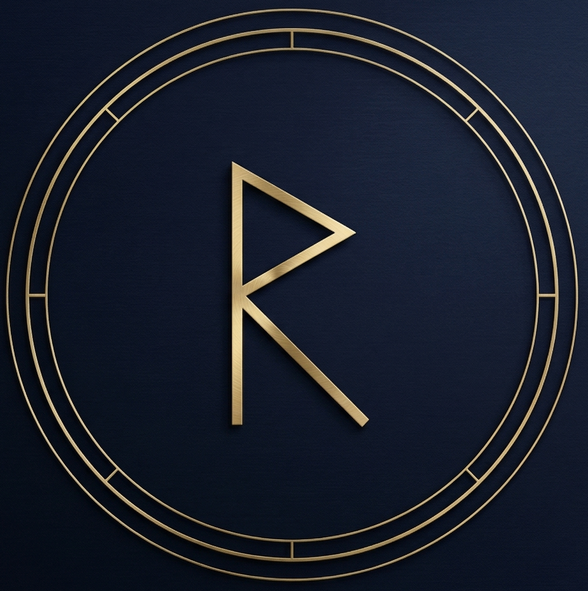

RUNIR
stake pool
Every node counts — encoded in the runes.
A quietly operated, technically serious stake pool run for the love of decentralisation — named after the Norse runes, where meaning is encoded for those who know how to read it.
✦